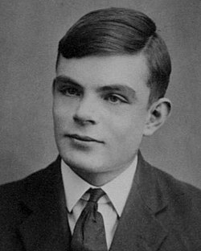
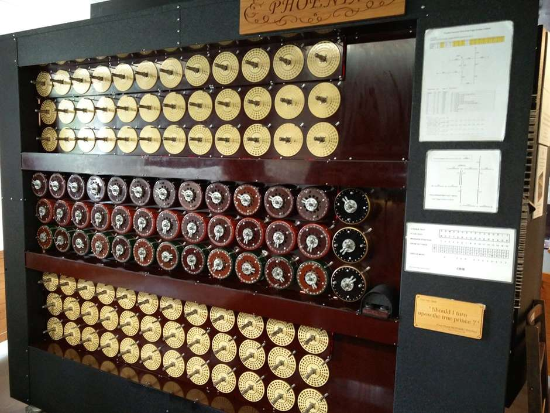
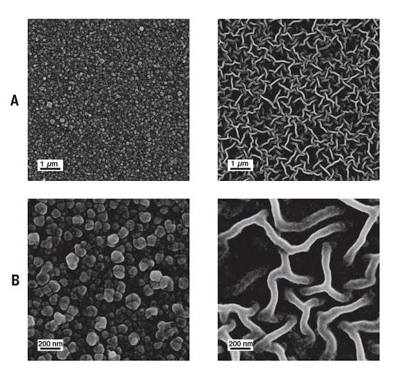

Sobre

Quem foi Alan Turing?
Alan Turing foi um matemático, lógico, criptoanalista e cientista da computação britânicoimportante formalização do conceito de algoritmo e computação com a máquina de Turing.

MÁQUINA DE TURING
Maquina de Turing, A Máquina de Turing é um dispositivo teórico conhecido como máquina universal, que foi concebido pelo matemático britânico Alan Turing, muitos anos antes de existirem os modernos computadores digitais.
